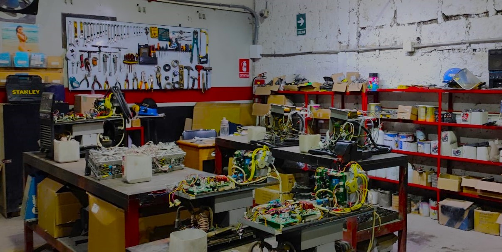
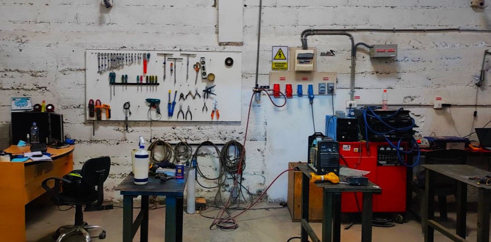
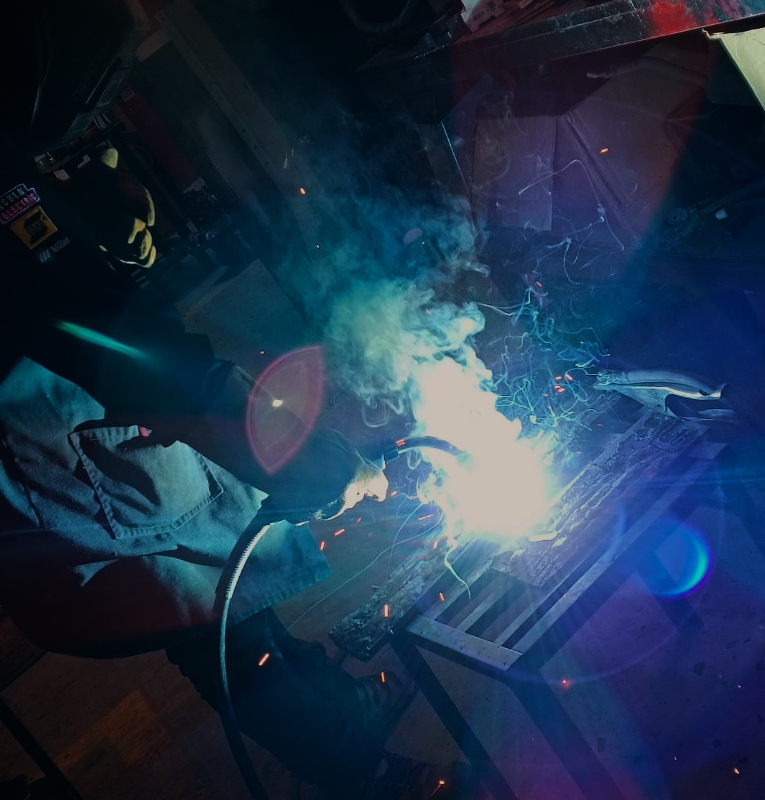

1. Taller De Reparación y Mantenimiento de Equipos de Soldadura
Dentro de nuestro taller contamos con 3 diferentes áreas que se encargan del diagnóstico de todas las máquinas que ingresan para posteriormente ser atendidos por nuestros técnicos especializados que se encargarán de reparar y realizar el mantenimiento necesario.
Áreas


Mantenimiento de Dinámicos y Estacionarios
Nos especializamos en el mantenimiento de todo tipo de equipos dinámicos y estacionarios.
- Máquinas Dinámicas: Se caracterizan por ser de fácil manejo o de constante transporte para ejecutar trabajos específicos.
- Máquinas Estacionarias: Son aquellas máquinas que se caracterizan por mantenerse estáticos dentro de un taller o área específica para realizar diversos procesos.
Laboratorio de Electrónica
Nuestro laboratorio de electrónica se encarga de realizar el montaje de todo tipo de sistema electrónico y verificar cumple con su función sin problema alguno. Contamos con un equipo especializado que garantiza un trabajo de calidad.

Taller De Soldadura
Dentro de nuestro taller de soldadura realizamos un proceso minucioso para fijar las piezas que sean necesarias y se vieron que son requeridas durante su diagnóstico.
2. Oficina de Administración
Nuestra oficina de administración está encargada de gestionar todos los recursos informativos asi como las ordenes de servicio realizadas, también se encarga de gestionar todos los recursos financieros dentro de nuestra empresa.
3. Área De Planchado y Pintura
Nos encargamos de recuperar y restaurar la estructura de las máquinas luego de haber pasado por todas las anteriores areas y entregarle un trabajo impecable.